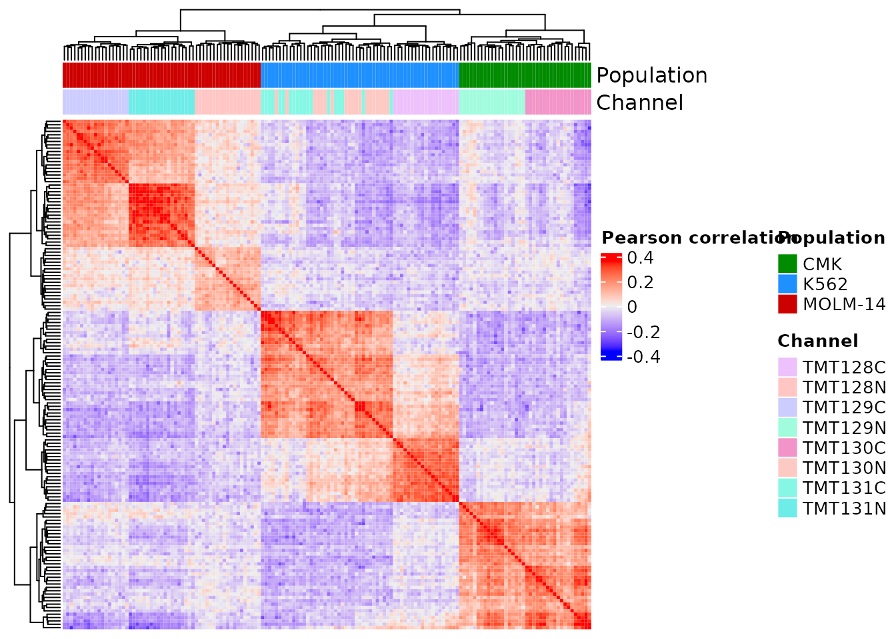
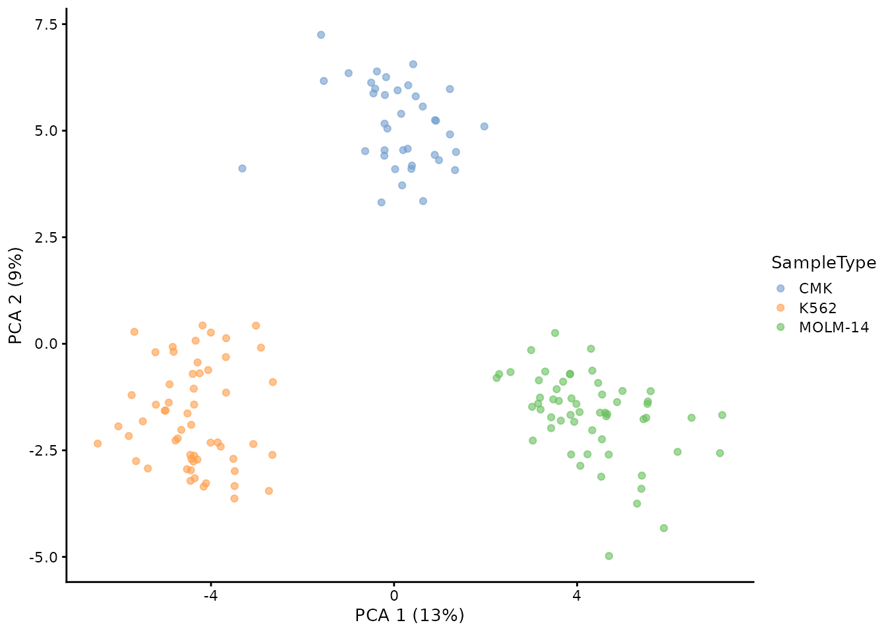

Reproducing the multiplexed SCP analysis by Williams et al. 2020
Christophe Vanderaa, Computational Biology, UCLouvain
Laurent Gatto, Computational Biology, UCLouvain
5 January 2022
williams2020_tmt.RmdIntroduction
Williams et al. present an auto-sampling device to interface between the nanoPOTS processing workflow and the LC-MS/MS. This allows for increased automation of the technology that is critical for advancing the field to real single-cell proteomics applications.
The authors did not provided the code required to fully reproduce their analysis. We therefore based our replication solely on the experimental section. The authors mention:
For TMT-based quantification, corrected reporter ion intensities were extracted. Reporter ion intensities from single cells were normalized to the reference channel containing 0.2 ng of apeptide mixture from the three AML cell lines at PSM level using MaxQuant (v. 1.6.12.0). To minimize the batch effect from multiple TMT experiments, the relative abundances from 19 TMT plexes were log2-transformed and the data matrices from all of the TMT experiments were combined after sequentially centering the column and row values to their median values. A criterion of >70% valid values and at least two identified peptides per protein were required to generate the “quantifiable’ protein list. The data matrix was further analyzed by Perseus for statistical analysis including princip[al] component analysis (PCA) and heatmap analysis.
Furthermore, the processed data by the authors is not provided, so we will benchmark the replication based on the figures in the article.
The authors however distribute the MaxQuant output that we have already converted to the scp data framework (Vanderaa and Gatto (2021)). See the scp vignette for more information about the framework. The QFeatures object containing the data sets from Williams et al. is available from the scpdata package. Let’s load the required packages before starting the replication.
Load the data
We can now load the multiplexed (TMT) SCP data set from Williams et al. This is performed by calling the williams2020_tmt() function from scpdata.
(williams <- williams2020_tmt())
## An instance of class QFeatures containing 4 assays:
## [1] peptides_intensity: SingleCellExperiment with 17966 rows and 209 columns
## [2] peptides_corrected: SingleCellExperiment with 17966 rows and 209 columns
## [3] proteins_intensity: SingleCellExperiment with 2646 rows and 209 columns
## [4] proteins_corrected: SingleCellExperiment with 2646 rows and 209 columnsThe data contain 4 different SingleCellExperiment objects that we refer to as assays. Each assay contains expression data along with feature metadata. Each row in an assay represents a feature that is either a peptide (assay 1-2) or a protein (assay 3-4). The protein and peptide data are split in two assays, containing either the summed peptide/protein intensities, or the corrected (reference normalization) quantifications. We also store the relationships between features of different assays. For instance, peptides_intensity are linked to proteins_intensity. We can plot these relationships and get an overveiew of the data set.
plot(williams)Each column (n = 209) in an assay represents a sample. We can easily retrieve the sample annotations from the colData.
colData(williams)
## DataFrame with 209 rows and 5 columns
## Channel SampleType ChannelIndex Amount Batch
## <character> <character> <character> <character> <character>
## 1.A1 TMT126 Boost 1 10ng A1
## 2.A1 TMT127N Reference 2 0.2ng A1
## 3.A1 TMT127C Empty 3 0 A1
## 4.A1 TMT128N MOLM-14 4 1cell A1
## 5.A1 TMT128C K562 5 1cell A1
## ... ... ... ... ... ...
## 7.C4 TMT129C MOLM-14 7 1cell C4
## 8.C4 TMT130N K562 8 1cell C4
## 9.C4 TMT130C CMK 9 1cell C4
## 10.C4 TMT131N MOLM-14 10 1cell C4
## 11.C4 TMT131C K562 11 1cell C4
table(williams$SampleType)
##
## Boost CMK Empty K562 MOLM-14 Reference
## 19 38 19 57 57 19Most of the samples are single cells, either CMK, K562 or MOLM-14. The remaining assays are either booster channels (Boost) with 10ng of protein lysate used to enhance peptide identification, reference channels (Reference') with 0.2ng of protein lysate used for reference normalization by MaxQuant, and empty channels ('Empty) with no material but containing spillover signal from the booster channel.
Feature quality control
The first step of the workflow is to remove reverse hits and contaminants. Before performing this step, we subsest the data to only single-cell samples. This subset is performed on the Amount variable from the colData, so we use subsetByColData().
(williams <- subsetByColData(williams, williams$Amount == "1cell"))
## An instance of class QFeatures containing 4 assays:
## [1] peptides_intensity: SingleCellExperiment with 17966 rows and 152 columns
## [2] peptides_corrected: SingleCellExperiment with 17966 rows and 152 columns
## [3] proteins_intensity: SingleCellExperiment with 2646 rows and 152 columns
## [4] proteins_corrected: SingleCellExperiment with 2646 rows and 152 columnsWe are left with a data set containing 152 single-cells. We can now filter out the reverse hits and contaminants. The required information is contained in the rowData of each assay (Reverse and Potential.contaminant, respectively). We use filterFeatures() to filter on the rowData.
(williams <- filterFeatures(williams, ~ Reverse != "+" & Potential.contaminant != "+"))
## An instance of class QFeatures containing 4 assays:
## [1] peptides_intensity: SingleCellExperiment with 17735 rows and 152 columns
## [2] peptides_corrected: SingleCellExperiment with 17735 rows and 152 columns
## [3] proteins_intensity: SingleCellExperiment with 2583 rows and 152 columns
## [4] proteins_corrected: SingleCellExperiment with 2583 rows and 152 columnsWe are left with 17,735 peptides and 2,583 proteins that pass the quality control.
Log-transformation
The authors next mention they log2-transformed the protein data. They however do not mention how they deal with 0 values that will become infinite after any logarithmic transformation. In this replication study, we replace 0’s with missing values using zeroIsNA().
williams <- zeroIsNA(williams, i = "proteins_corrected")We then apply logTransform() on the proteins_corrected assay containing the protein data normalized by MaxQuant.
(williams <- logTransform(williams, base = 2,
i = "proteins_corrected", name = "proteins_log"))
## An instance of class QFeatures containing 5 assays:
## [1] peptides_intensity: SingleCellExperiment with 17735 rows and 152 columns
## [2] peptides_corrected: SingleCellExperiment with 17735 rows and 152 columns
## [3] proteins_intensity: SingleCellExperiment with 2583 rows and 152 columns
## [4] proteins_corrected: SingleCellExperiment with 2583 rows and 152 columns
## [5] proteins_log: SingleCellExperiment with 2583 rows and 152 columnsWe stored the results in a new assay called proteins_log.
Normalization
The authors then further normalize the data by sequentially centering the column and row values to their median values. Centering columns to the median is readily available in normalizeSCP().
williams <- normalizeSCP(williams, method = "center.median",
i = "proteins_log", name = "proteins_norm")However, this is not the case for the row centering. The author mention they perform the row centering for each batch separately. We need to implement this custom normalization. First, we extract the assay of interest with the associated colData using getWithColData().
sceNorm <- getWithColData(williams, "proteins_norm")
## Warning: 'experiments' dropped; see 'metadata'Then, we build a for loop that iterates through each batch and centers the rows based on the median within each batch.
for (batch in sceNorm$Batch) {
ind <- which(sceNorm$Batch == batch)
rowMeds <- rowMedians(assay(sceNorm[, ind]), na.rm = TRUE)
assay(sceNorm[, ind]) <- sweep(assay(sceNorm[, ind]), FUN = "-",
STATS = rowMeds, MARGIN = 1)
}Finally, we add the row-normalized assay back in the data set and add the relationships from the previous assay to this new assay.
williams <- addAssay(williams, sceNorm, name = "proteins_norm2")
williams <- addAssayLinkOneToOne(williams, from = "proteins_norm",
to = "proteins_norm2")Handle missing data
The authors remove proteins that have more than 30 % missing data. We use filterNA() and provide the threshold of maximum 30% missing values.
williams <- filterNA(williams, pNA = 0.3, i = "proteins_norm2")Keep confident proteins
The authors next keep only proteins that are identified with at least 2 peptides. We can retrieve which proteins are made of several peptides from the rowData of the peptides_corrected assay. The peptides were mapped to the protein data thanks to the Leading.razor.protein. All proteins that are present at least 2 are kept.
## Get `Leading.razor.protein` from the peptide `rowData`
prots <- rowData(williams[["peptides_corrected"]])$Leading.razor.protein
## Get all proteins that are present at least twice
prots <- unique(prots[duplicated(prots)])
## Keep only proteins that were kept after missing data filtering
prots <- prots[prots %in% rownames(williams)[["proteins_norm2"]]]
head(prots)
## [1] "TPM3_HUMAN" "XPO2_HUMAN" "PTMA_HUMAN" "MIC19_HUMAN" "RL1D1_HUMAN"
## [6] "TLN1_HUMAN"We generated a vector with the proteins identified at least twice. We can now use it to subset the data set. Note that a QFeatures object can be seen as a three-order array: \(features \times samples \times assay\). Hence, QFeatures supports three-order subsetting x[rows, columns, assays]. The great advantage of this subsetting is that all peptides linked to these desired proteins are also retrieved thanks to the relationships stored between proteins and peptides.
(williams <- williams[prots, , ])
## An instance of class QFeatures containing 7 assays:
## [1] peptides_intensity: SingleCellExperiment with 12538 rows and 152 columns
## [2] peptides_corrected: SingleCellExperiment with 12538 rows and 152 columns
## [3] proteins_intensity: SingleCellExperiment with 1197 rows and 152 columns
## [4] proteins_corrected: SingleCellExperiment with 1197 rows and 152 columns
## [5] proteins_log: SingleCellExperiment with 1197 rows and 152 columns
## [6] proteins_norm: SingleCellExperiment with 1197 rows and 152 columns
## [7] proteins_norm2: SingleCellExperiment with 1197 rows and 152 columnsThis step concludes the quantitative data processing. We update the QFeatures plot that provides an overview of the processing.
plot(williams)
Downstream analysis
The authors used the processed data to perform two types of downstream analysis: single-cell correlation analysis and principal component analysis. We here provide the published figure that we aim to reproduce in this vignette.
Figure 6 from Williams et al. 2020
To run the downstream analysis, we only need the last assay generated during the quantitative data processing. We extract the assay as well as the associated sample annotations using getWithColData().
sce <- getWithColData(williams, "proteins_norm2")
## Warning: 'experiments' dropped; see 'metadata'
## Warning: Ignoring redundant column names in 'colData(x)':Correlation analysis
We first compute the correlation matrix. We use pairwise
m <- assay(sce)
corMat <- cor(m, method = "pearson", use = "pairwise.complete.obs")We use the ComplexHeatmap package to plot the heatmap. This package allows easy annotation of the plot, namely labeling each sample with its sample type and channel.
library(ComplexHeatmap)
cols <- c(CMK = "green4", `K562` = "dodgerblue", `MOLM-14` = "red3")
colAnnot <- columnAnnotation(Population = sce$SampleType,
Channel = sce$Channel,
col = list(Population = cols))We can now plot the heatmap.
Heatmap(corMat, name = "Pearson correlation",
show_row_names = FALSE, show_column_names = FALSE,
top_annotation = colAnnot)
Like in the figure from the article, we observe a positive correlation between samples from the same cell type. We also observe with sample type clusters. While this is not shown in the original figure, we can clearly link this effect to TMT channel bias. This should be corrected for, but a the poor experimental design causes sample type and TMT channel to be confounded, and hence entangling the TMT effects with bioligical effects.
PCA
PCA can directly be computed from a SingleCellExperiment object thanks to the scater package. We therefore use runPCA(). Note that we also impute the missing values with zeros as PCA does not support missing value.
We generate the PCA plots using plotPCA(), and use different colouring schemes to highlight different samples annotations.
plotPCA(sce, colour_by = "SampleType")
The sample types can be differentiated on the PCA plot, although the CMK and MOLM-14 slightly overlap what is not observed in the published work. Another small difference is that the first to PC explaine 15 % of the variance while the authors report 22 % explained variance.
Conclusion
We were able to reproduce the general results from the analysis by Williams et al. (2020). However, we notice small discrepancies indicating small differences between workflows. Without a script or the intermediate results from the authors, we are unable to pinpoint which steps differ.
Requirements
Hardware and software
The system details of the machine that built the vignette are:
## Machine: Linux (5.11.0-43-generic)
## R version: R.4.2.0 (svn: 81131)
## RAM: 16.5 GB
## CPU: 16 core(s) - 11th Gen Intel(R) Core(TM) i7-11800H @ 2.30GHzSession info
sessionInfo()
## R Under development (unstable) (2021-11-02 r81131)
## Platform: x86_64-pc-linux-gnu (64-bit)
## Running under: Ubuntu 20.04.3 LTS
##
## Matrix products: default
## BLAS: /usr/lib/x86_64-linux-gnu/blas/libblas.so.3.9.0
## LAPACK: /usr/lib/x86_64-linux-gnu/lapack/liblapack.so.3.9.0
##
## locale:
## [1] LC_CTYPE=en_US.UTF-8 LC_NUMERIC=C
## [3] LC_TIME=en_GB.UTF-8 LC_COLLATE=en_US.UTF-8
## [5] LC_MONETARY=en_GB.UTF-8 LC_MESSAGES=en_US.UTF-8
## [7] LC_PAPER=en_GB.UTF-8 LC_NAME=C
## [9] LC_ADDRESS=C LC_TELEPHONE=C
## [11] LC_MEASUREMENT=en_GB.UTF-8 LC_IDENTIFICATION=C
##
## attached base packages:
## [1] grid stats4 stats graphics grDevices utils datasets
## [8] methods base
##
## other attached packages:
## [1] benchmarkme_1.0.7 scater_1.23.2
## [3] ggplot2_3.3.5 scuttle_1.5.0
## [5] SingleCellExperiment_1.17.2 ComplexHeatmap_2.11.0
## [7] scp_1.5.0 scpdata_1.3.2
## [9] ExperimentHub_2.3.4 AnnotationHub_3.3.7
## [11] BiocFileCache_2.3.3 dbplyr_2.1.1
## [13] QFeatures_1.5.3 MultiAssayExperiment_1.21.5
## [15] SummarizedExperiment_1.25.3 Biobase_2.55.0
## [17] GenomicRanges_1.47.5 GenomeInfoDb_1.31.1
## [19] IRanges_2.29.1 S4Vectors_0.33.8
## [21] BiocGenerics_0.41.2 MatrixGenerics_1.7.0
## [23] matrixStats_0.61.0 BiocStyle_2.23.1
##
## loaded via a namespace (and not attached):
## [1] circlize_0.4.13 systemfonts_1.0.3
## [3] igraph_1.2.10 lazyeval_0.2.2
## [5] BiocParallel_1.29.6 digest_0.6.29
## [7] foreach_1.5.1 htmltools_0.5.2
## [9] viridis_0.6.2 magick_2.7.3
## [11] fansi_0.5.0 magrittr_2.0.1
## [13] memoise_2.0.1 ScaledMatrix_1.3.0
## [15] cluster_2.1.2 doParallel_1.0.16
## [17] Biostrings_2.63.0 pkgdown_2.0.1
## [19] colorspace_2.0-2 ggrepel_0.9.1
## [21] blob_1.2.2 rappdirs_0.3.3
## [23] textshaping_0.3.6 xfun_0.29
## [25] dplyr_1.0.7 crayon_1.4.2
## [27] RCurl_1.98-1.5 jsonlite_1.7.2
## [29] iterators_1.0.13 glue_1.6.0
## [31] gtable_0.3.0 zlibbioc_1.41.0
## [33] XVector_0.35.0 GetoptLong_1.0.5
## [35] DelayedArray_0.21.2 BiocSingular_1.11.0
## [37] shape_1.4.6 scales_1.1.1
## [39] DBI_1.1.2 Rcpp_1.0.7
## [41] viridisLite_0.4.0 xtable_1.8-4
## [43] clue_0.3-60 bit_4.0.4
## [45] rsvd_1.0.5 MsCoreUtils_1.7.2
## [47] httr_1.4.2 RColorBrewer_1.1-2
## [49] ellipsis_0.3.2 farver_2.1.0
## [51] pkgconfig_2.0.3 sass_0.4.0
## [53] utf8_1.2.2 labeling_0.4.2
## [55] tidyselect_1.1.1 rlang_0.4.12
## [57] later_1.3.0 AnnotationDbi_1.57.1
## [59] munsell_0.5.0 BiocVersion_3.15.0
## [61] tools_4.2.0 cachem_1.0.6
## [63] generics_0.1.1 RSQLite_2.2.9
## [65] evaluate_0.14 stringr_1.4.0
## [67] fastmap_1.1.0 yaml_2.2.1
## [69] ragg_1.2.1 knitr_1.37
## [71] bit64_4.0.5 fs_1.5.2
## [73] purrr_0.3.4 KEGGREST_1.35.0
## [75] AnnotationFilter_1.19.0 sparseMatrixStats_1.7.0
## [77] mime_0.12 compiler_4.2.0
## [79] beeswarm_0.4.0 filelock_1.0.2
## [81] curl_4.3.2 png_0.1-7
## [83] interactiveDisplayBase_1.33.0 tibble_3.1.6
## [85] bslib_0.3.1 stringi_1.7.6
## [87] highr_0.9 desc_1.4.0
## [89] lattice_0.20-45 ProtGenerics_1.27.1
## [91] Matrix_1.3-4 vctrs_0.3.8
## [93] pillar_1.6.4 lifecycle_1.0.1
## [95] BiocManager_1.30.16 jquerylib_0.1.4
## [97] GlobalOptions_0.1.2 BiocNeighbors_1.13.0
## [99] cowplot_1.1.1 bitops_1.0-7
## [101] irlba_2.3.5 httpuv_1.6.4
## [103] R6_2.5.1 bookdown_0.24
## [105] promises_1.2.0.1 gridExtra_2.3
## [107] vipor_0.4.5 codetools_0.2-18
## [109] benchmarkmeData_1.0.4 MASS_7.3-54
## [111] assertthat_0.2.1 rprojroot_2.0.2
## [113] rjson_0.2.20 withr_2.4.3
## [115] GenomeInfoDbData_1.2.7 parallel_4.2.0
## [117] beachmat_2.11.0 rmarkdown_2.11
## [119] DelayedMatrixStats_1.17.0 shiny_1.7.1
## [121] ggbeeswarm_0.6.0